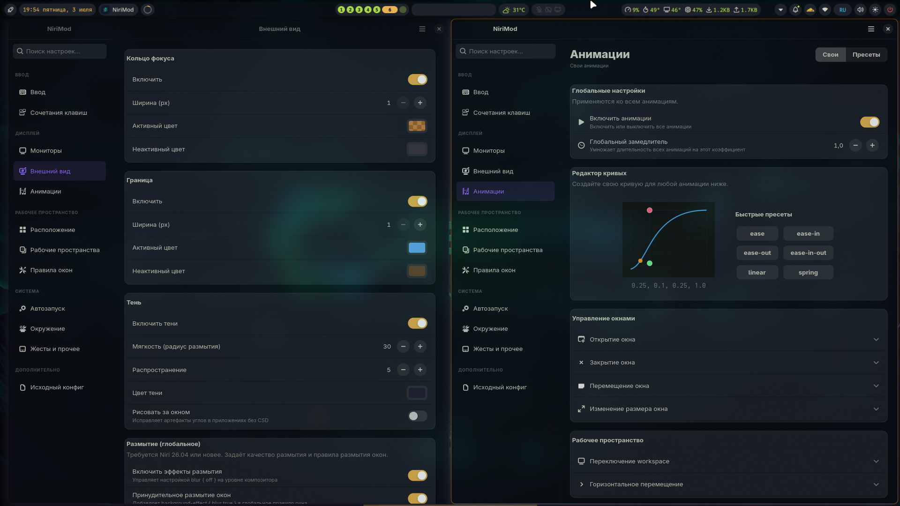
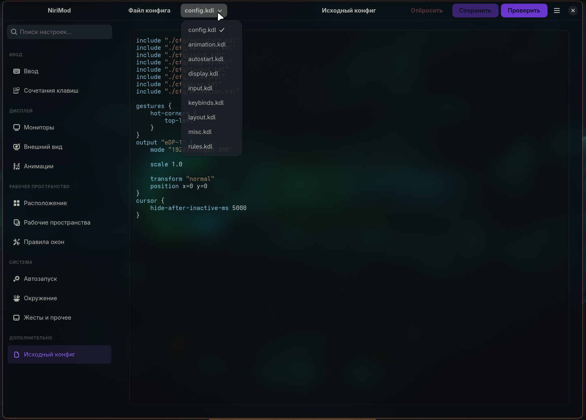

Мониторы
Разрешение, частота, масштаб, позиция, трансформация, VRR и отключение отдельных выходов.
Русская версия GTK4/libadwaita для niri
NiriMod RU помогает менять мониторы, ввод, сочетания клавиш, анимации, правила окон и рабочие пространства без ручного редактирования KDL.

Что умеет проект
Проект не заменяет niri, а делает работу с его конфигурацией понятной, безопасной и визуальной.
Разрешение, частота, масштаб, позиция, трансформация, VRR и отключение отдельных выходов.
Настройка XKB, повтора клавиш, фокуса по наведению, прокрутки, тачпада, мыши и курсора.
Визуальная карта клавиатуры, список привязок, поиск и редактор действий niri.
Тени, границы, скругления, прозрачность и эффекты размытия для окон.
Глобальное включение анимаций, замедление, редактор easing-кривых и пресеты под сценарии.
Промежутки между окнами, ширина колонок, центрирование, struts, фон и поведение CSD.
Именованные workspace и привязка к мониторам для аккуратной структуры рабочего стола.
Условия по App ID, заголовку или namespace, размещение, размеры и визуальные эффекты.
Безопасность прежде всего
Перед сохранением выполняется проверка конфигурации через niri validate. Если проверка не проходит, изменения не применяются, а все правки можно откатить или восстановить из резервной копии.

Многофайловые конфигурации
NiriMod RU умеет читать конфигурации, разделённые через include, и сохранять изменённые параметры обратно в исходные файлы. Это удобно для кастомных сборок и дополнительных слоёв окружения.
Установка
Подходит для Arch Linux и CachyOS. Сборка через makepkg и установка пакета одним шагом.
mkdir -p ~/build
cd ~/build
git clone https://github.com/y-tretyakov/nirimod-ru.git
cd nirimod-ru
makepkg -siЕсли архив уже подготовлен на другой машине или в CI, достаточно установить его напрямую.
sudo pacman -U ./nirimod-ru-git-r91.20260703-1-x86_64.pkg.tar.zstИспользуйте установочный скрипт и выберите нужный режим через флаги.
curl -sSL https://raw.githubusercontent.com/y-tretyakov/nirimod-ru/main/install.sh | bashТребования
Разработка
uv sync --dev
uv run pytestДля проверки PKGBUILD можно использовать makepkg и namcap.
FAQ
Это русскоязычный форк с адаптированным интерфейсом, документацией и пакетными инструкциями для пользователей Linux.
Нет. NiriMod RU редактирует существующую конфигурацию и проверяет её через niri validate, сохраняя резервные копии.
Можно открыть и сохранить конфигурацию, но применить её через IPC получится только после запуска композитора.